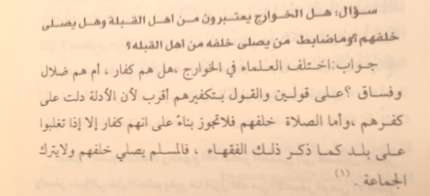

|
Kharijites.Com |
|
Shaykh Ṣāliḥ Al-Fawzān: The Khārijites Are Closer to Being Disbelievers and Prayer Is Not Said Behind Them Posted by Abu Iyaad on Wednesday, October, 12 2016 and filed under Scholars In his lessons on Nawāqiḍ al-Islām, the Shaykh was asked:
Shaykh Ṣāliḥ al-Fawzān answered:
Reference: Durūs Fī Sharḥ Nawāqiḍ al-Islām (1425H) p. 170.  Note that takfīr of the Khārijites has also been indicated by Imām al-Bukhārī, al-Qāḍī Abu Bakr, al-Subkī, al-Qurṭubī, al-Qāḍī ʿIyāḍ, al-Nawawī and likewise Imām Ibn Bāz. Shaykh al-Fawzān has mentioned above that scholars have differed in this regard and in the answer above, the Shaykh states that the view closer to the truth is that the Khārijtes are disbelievers. The Shaykh also has other verdicts in which he tends to the view that they are misguided sinners and not disbelievers.
|